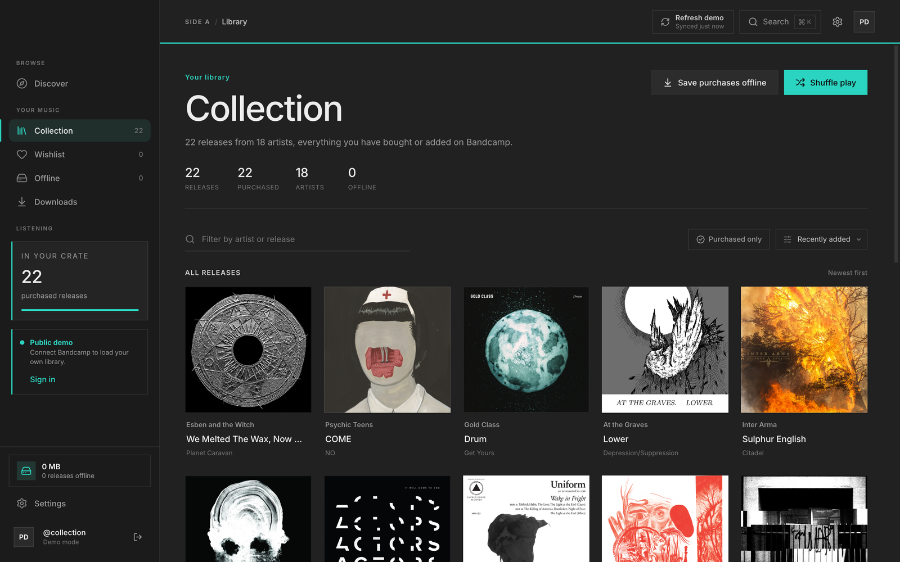
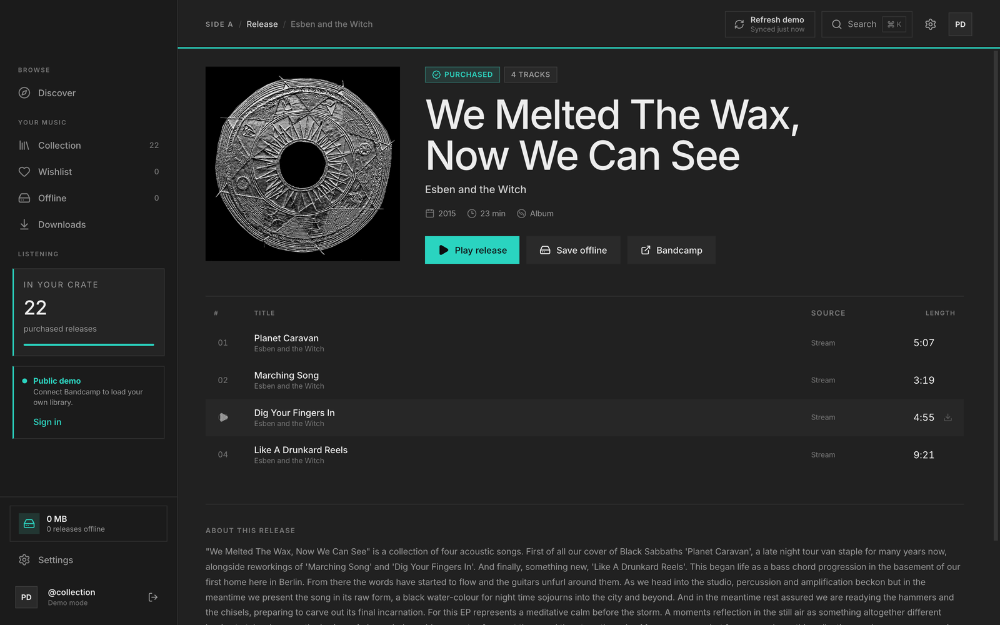
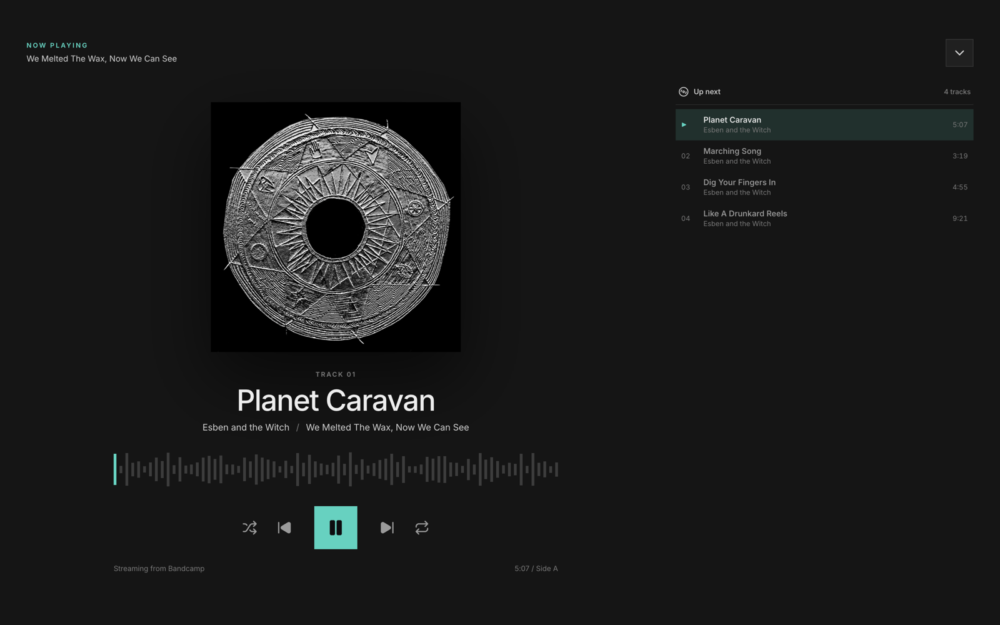
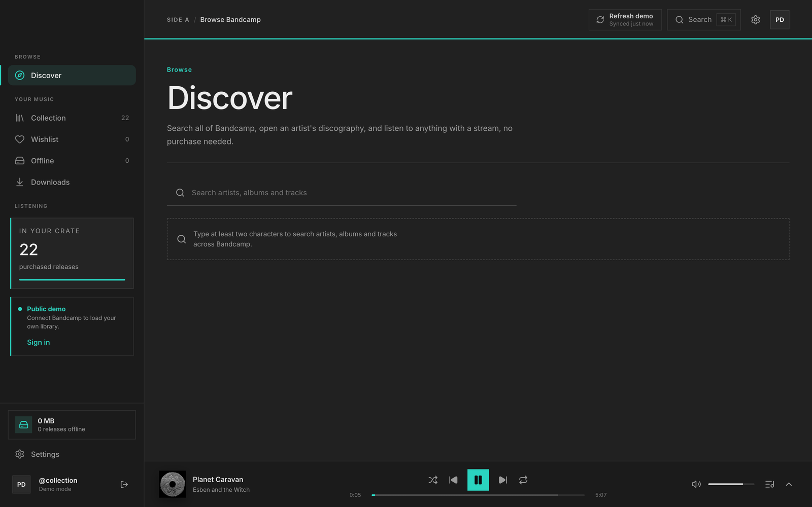
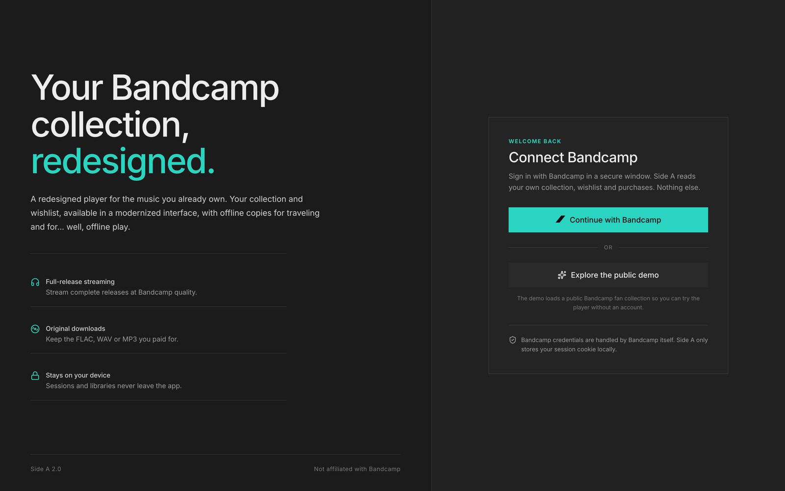

Collection and wishlist
Every release you have bought or added, sorted by artist, title or newest first. The filter field narrows the grid as you type, and the wishlist has its own view.

Side A reads the Bandcamp collection you already own and keeps it in one place. It plays releases, stores copies for offline listening, downloads your purchases and browses the rest of Bandcamp.
Every release you have bought or added, sorted by artist, title or newest first. The filter field narrows the grid as you type, and the wishlist has its own view.
Play any release in your collection at Bandcamp quality. Queue the whole record, shuffle it, repeat one track, or open the expanded now playing view.
Save a release and Side A keeps its cover art and 128 kbps audio on disk. Storage is tracked per release, so you choose what stays and what goes.
Download the FLAC, WAV, AIFF or MP3 you paid for, or grab a single track in the quality you pick. Files go to the download folder set in Settings.
Scrobbles queue locally and reach Last.fm when the connection returns. Discord shows the current track with a live progress bar. Both are optional.
Dark and light themes, any accent colour from the picker, and a reduced motion setting that turns off page and artwork animation.


Search artists, albums and tracks across Bandcamp, open a discography, and stream a release before you buy it. Discover results play through the same player as your collection, and nothing is added to your library unless you add it.


Bandcamp handles the sign-in in its own window. Side A keeps the session cookie in the operating system credential store, reads your collection, wishlist and purchases, and sends nothing else.
There is a public demo collection if you want to look around before connecting an account. Sign out at any time from the sidebar.
Free and open source, MIT licensed. Both installers are per-user installs and do not need an administrator password.
macOS 12 Monterey or newer, Apple silicon
The build is ad-hoc signed, so the first launch may ask you to approve it. Right-click the app and choose Open, or run:
xattr -cr "/Applications/Side A.app"
Windows 10 (1809) or newer, 64-bit
SmartScreen may warn about an unsigned installer. Choose More info, then Run anyway. The warning goes away once the build is code signed.
Older builds and source: All releases and GitHub.
Release notes and checksums are on the GitHub releases page.
Yes. It is MIT licensed and the source is on GitHub. You still need a Bandcamp account and music in your collection. Side A plays what you own and does not sell or stream a catalogue of its own.
Signing in lets Side A read your collection, wishlist and purchases. There is also a public demo collection if you want to look around first.
The session cookie is sealed by the operating system credential store: Keychain on macOS and DPAPI on Windows. Offline tracks and cover art live in the app data folder, and purchased downloads go to the folder you choose in Settings.
The build is not notarized because that needs a paid Apple Developer certificate. It is ad-hoc
signed, so right-click and Open works. If macOS still objects, clear the quarantine flag with
xattr -cr "/Applications/Side A.app".
Not right now. The macOS build targets Apple silicon and the Windows build targets x64. The source builds on both platforms, so a fork can add other targets.
Side A checks GitHub for a newer release when it starts and shows a pill in the top bar when one exists. Settings also has a check button. Downloads are manual, from the releases page.